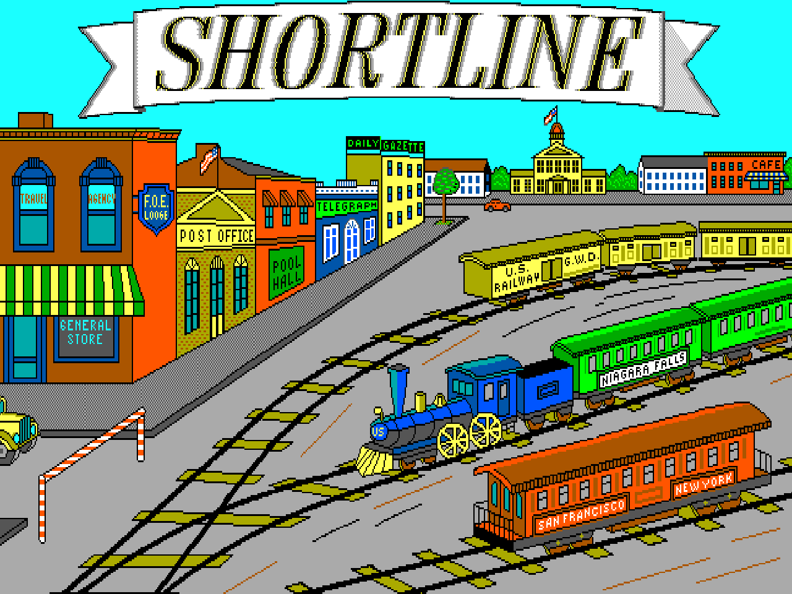

reSL
remastered ShortLine v1.1 game
The main idea of the game ShortLine is managing a railroad in the 19-20th centuries.
The main thing you need to do is to direct the trains to the cities of appropriate color, avoiding collisions.
At the same time, you need to keep in mind that the train cannot be controlled, we can only stop the traffic using a traffic light or direct the train in the right direction using the switches. You can also develop your railway network - build new roads!
Build forks, earn money and don't let trains collide!
Build forks, earn money and don't let trains collide!
Introducing reSL, a completely faithful revival of the classic DOS game, ShortLine Railroads!
Relive the excitement of the 90s as you build your railway empire, now adapted for touch devices while retaining classic gameplay.
Dive into the world of reSL, enjoy the nostalgia and build your dream railroad today!
Controls
Mouse/Keyboard Controls
Players can use the same controls as in the original game. Additionaly, you can use <space> to toggle construction/management modes instead of pressing both mouse buttons at the same time.
Touch ControlsNavigate and control your rail network with intuitive touch gestures:
- Use vertical or horizontal swipes to toggle between management and construction modes.
- In the construction mode: long touch to build roads, and short touch to select the type of rails to construct.
- In the management mode: Long touch on a city to call a server train; short touch to toggle traffic lights or switches.